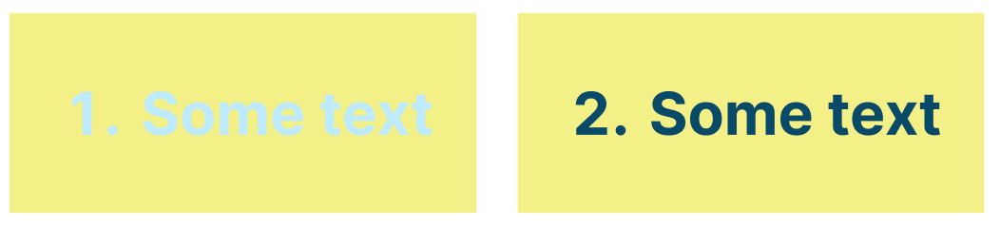
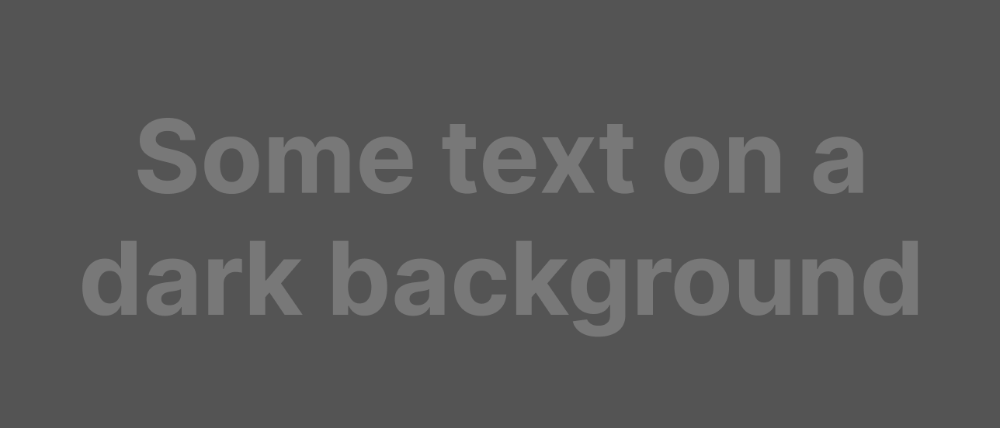

Colour contrast#
Colour contrast and its importance#
Put simply, colour contrast is how different one colour is from another colour. Measuring colour contrast requires 2 colours to be compared against each other. Colour contrast is particularly important for text and other essential elements.
{kind=link}
MCQ
Which of these colour pairings has higher colour contrast?
Having good colour contrast ensures that people with low vision are able to see elements clearly. It also helps when viewing a screen in bright sunlight. This is a good example of accessibility helping everyone, not just people with disabilities.
Colour ratios and the WCAG#
Recommendations from the WCAG for colour contrast differ for AA and AAA levels. Remember that AAA level requirements are stricter than AA level requirements. Read the following excerpt from WCAG Success Criterion 1.4.3 Contrast (Minimum) (Level AA):
The visual presentation of text and images of text has a contrast ratio of at least 4.5:1, except for the following:
- Large Text:
Large-scale text and images of large-scale text have a contrast ratio of at least 3:1;
…
Read the following WCAG excerpt Success Criterion 1.4.4 Contrast (Enhanced) (Level AAA):
The visual presentation of text and images of text has a contrast ratio of at least 7:1, except for the following:
- Large Text:
Large-scale text and images of large-scale text have a contrast ratio of at least 4.5:1;
…
MCQ
From the WCAG, 3:1 is the minimum colour ratio requirement for:
MCQ
From the WCAG, 4.5:1 is the minimum colour ratio requirement for:
MCQ
From the WCAG, 7:1 is the minimum colour ratio requirement for:
Important non-text information such as graphics have the same WCAG contrast requirements as large text. That is, graphics should have a contrast ratio of 3:1 for level AA and 4.5:1 for level AAA.
Colour contrast vs colour blindness (optional)#
Note
This subsection is optional. Feel free to skip to the next subheading.
It is easy to get confused between colour blindness and colour contrast since they are both related to colour. But it’s important to remember colour blindness is related to the hues of colours (e.g., red, yellow) and colour contrast is related to the luminance (or brightness of colours). For example, the image below is accessible in terms of colour blindness, since it is only in black and white.
{kind=link}
However, it is still hard to read because of insufficient colour contrast. Its colour ratio is around 1.7:1 which is below the WCAG requirements.
Colour contrast in Adee#
Adee allows you to modify either of the two selected colours on the spot and immediately see if the contrast standards are met. Selecting the “Apply” button saves the changes in Adee to the actual Figma object.
Tip
Don’t forget colour contrast must be between TWO colours. Unlike Adee’s other functionalities, two elements must be selected in Figma. Either click and drag over both elements or whilst holding shift, click one then the other.
Adee task 6#
Adee task 6
Check the colour contrast of a button.
Select the text and its background in task 6
Open the Adee plugin to “Contrast Checker tool”
Check the contrast of the button text and its background
Adjust the colours to meet AAA level standards
Close the plugin
Adee task rating
Rate the difficulty of Adee task 6Adee task 7#
Adee task 7
Check the colour contrast in a chart.
Suppose you want to determine if the colour contrast between the two colours used in the bar graph under task 7 meet AA level standards. How would you do that?
Adee task rating
Rate the difficulty of Adee task 7Knowledge self-rating
How well do you understand colour contrast?